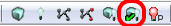
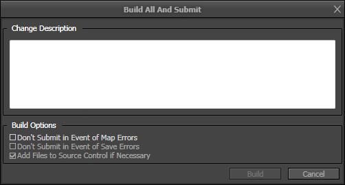

UDN
Search public documentation:
AutomatedMapBuildCH
English Translation
日本語訳
한국어
Interested in the Unreal Engine?
Visit the Unreal Technology site.
Looking for jobs and company info?
Check out the Epic games site.
Questions about support via UDN?
Contact the UDN Staff
日本語訳
한국어
Interested in the Unreal Engine?
Visit the Unreal Technology site.
Looking for jobs and company info?
Check out the Epic games site.
Questions about support via UDN?
Contact the UDN Staff
自动地图构建
概述
编辑器对话框
调出对话框
可以使用下面两种方法中的任何一种访问编辑器对话框：- 构建工具栏图标

- 构建菜单

使用对话框

变更列表描述
要求用户输入将构建和保存的地图提交到源代码控制时会用到的变更列表描述。除了用户提供的描述外，在提交地图的时候还会在描述前加上专用的“[自动提交]”标签。构建选项
为用户提供了一些选项，可以使用它们改变自动构建操作：- 在发生地图错误的情况下不提交
如果勾选该项，那么构建地图发生一个或多个地图检查错误后，不会提交其中的任何构建地图。
- 在发生保存错误的情况下不提交
如果勾选该项，那么在构建地图由于任何原因无法进行保存的情况下，不会提交其中的任何构建地图。
- 如果需要将文件添加到源代码控制
如果勾选该项，那么会自动添加任何还没有在源代码库中的构建地图作为提交过程的一部分。
对话框构建操作
只要用户点击了“构建”，对话框将会检查每个地图文件是否可以进行构建，如果可以，就会开始使用生产级别光照进行整个构建过程。准备过程中会检查确保所有地图都已经具有与它们相关联的文件（例如，它们都不是“新”地图）以及每个地图是否可以迁出源代码控制，或者没有在源代码控制库中时，该文件不是只读文件。当准备过程发生错误的时候，会立即提示用户是否继续进行构建。 例如，加入用户尝试使用三个子关卡构建地图，而另一个用户以独占方式将其中一个子关卡迁出。对话框会警告，无法从源代码控制中迁出某一文件。此时，用户可以选择继续或取消构建地图。如果用户继续进行构建，那么该构建仍然会作用于所有的关卡，但是不会保存无法迁出的关卡或将其提交到源代码控制。切记，继续这样操作，最后会将未完全构建的地图提交给源代码控制。 只要成功完成构建，对话框将会保存所有相关的文件，然后将所有互相兼容的文件提交到源代码控制库中。命令行调用
命令行用法
要指定自动构建，用户必须指定标准编辑器命令行参数以及地图名称和两个专用的自动构建参数：- -AutomatedMapBuild
它是发信号通知编辑器已经申请了一个自动构建所需的专用参数。
- CLDesc="Changelist Description Here!"
注意，使用引用的字符串时要在变更列表描述中预留空间。如果省略了该参数，随即构建会在构建准备期间失败。
editor DM-Deck -AutomatedMapBuild CLDesc="Rebuilding DM-Deck"
可选命令行参数
可以通过提供其他参数配置命令行自动构建的操作：- IgnoreBuildErrors=TRUE/FALSE
- Description: 可以确定由构建地图产生的地图检查错误是否会阻碍提交。如果将其设置为 FALSE，那么在任何地图产生地图检查错误的情况下，所有地图都不会提交。
- Default Behavior: 已忽略；默认情况下忽略构建错误，这是因为通常它们不会严重到阻碍提交。
- IgnoreSCCErrors=TRUE/FALSE
- 描述： 可以确定由无法迁出地图文件（其他人可以迁出的文件）造成的错误是否会阻碍提交。如果将其设置为 FALSE，那么在由于某种原因无法迁出或写入任意地图的情况下，所有地图都不会提交。
- 默认操作： 构建中止；源代码控制错误最后通常会导致构建不完整，所以在默认情况下它们默认为中止构建。
- IgnoreMapSaveErrors=TRUE/FALSE
- 描述： 可以确定无法正常保存地图文件是否会阻碍提交。如果将其设置为 FALSE，那么在由于某种原因无法正确保存任意地图的情况下，所有地图都不会提交。
- 默认操作： 构建中止；保存错误通常表示某些地方出现了问题，所以它们默认中止构建过程。
- AddFilesNotInDepot=TRUE/FALSE
- 描述： 可以确定是否应该将还没有在源代码控制库中的地图文件添加到库中，作为自动构建的一部分。
- 默认操作： FALSE；默认情况下，自动构建不会将没有在库中的文件添加到库中。